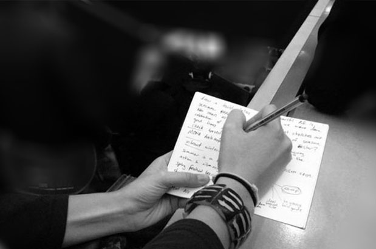

Objectif¶
Fly on the wall est une technique d’observation et d’analyse en UX Design en écoutant et regardant.
Elle consiste à observer l’utilisateur dans l’usage du produit en discrétion. Le principe repose sur un observateur qui se fond dans le contexte naturel d’utilisation du produit sans se faire remarquer par les utilisateurs. Le but est de ne pas interférer ou de biaiser l’utilisation du produit par l’utilisateur.
Cependant, contrairement à la méthode “Shadowing” qui consiste à suivre ce dernier pendant ses activités, la technique Fly on the wall repose sur un observateur, dans un espace public de préférence, statique, comme une mouche posée sur un mur, d’où son nom. Elle est à réaliser lors de la face d’analyse, pour comprendre l’utilisateur ainsi que lors des tests utilisateurs.

Avantages :¶
être au plus proche de l’utilisateur
méthode non coûteuse et facile à mettre en œuvre
Pas d’influence de l’observateur sur le comportements des participants
Inconvénients :¶
L’observateur ne peut pas poser de questions à l’utilisateur, et n’aura pas de réponse
Limite d’utilisateurs étudiés car une grande importance accordé à chacun d’entre eux, résultat subjectif
Moins de sensibilité et d’empathie envers les participants
Cette méthode permet de recueillir des données sur les interactions, les attitudes, les préférences technologiques, les habitudes, les comportements sociaux et les besoins des utilisateurs.
Les utilisateurs vont agir avec le produit et leur environnement naturellement car ils ne se sentiront pas observer par un tiers.
Quand l’utiliser ?¶
Cette méthode est à utiliser quand il s’agit d’observer plusieurs utilisateurs avec le produit ou le service dans leur environnement. Si l’environnement importe peu, et si l’on veut n’observer qu’un seul utilisateur ou une très grande quantité d’entre eux, cette méthode n’est pas conseillé.